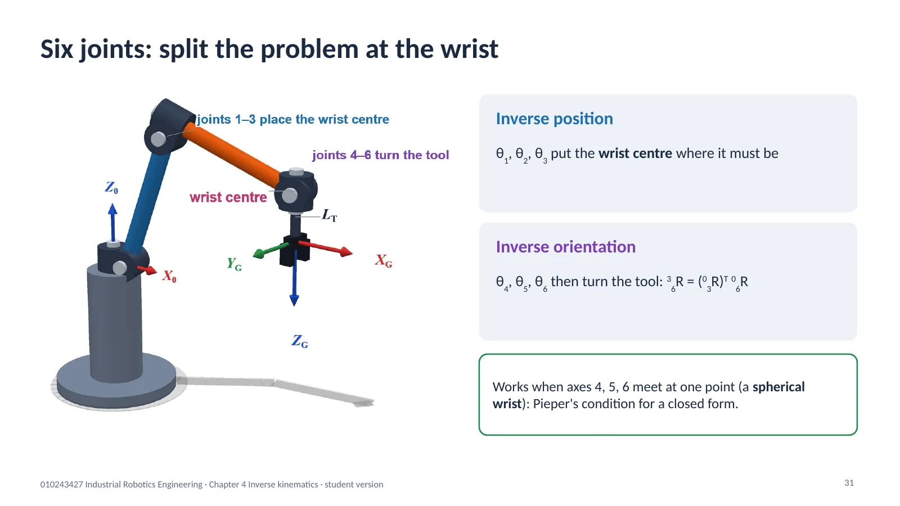
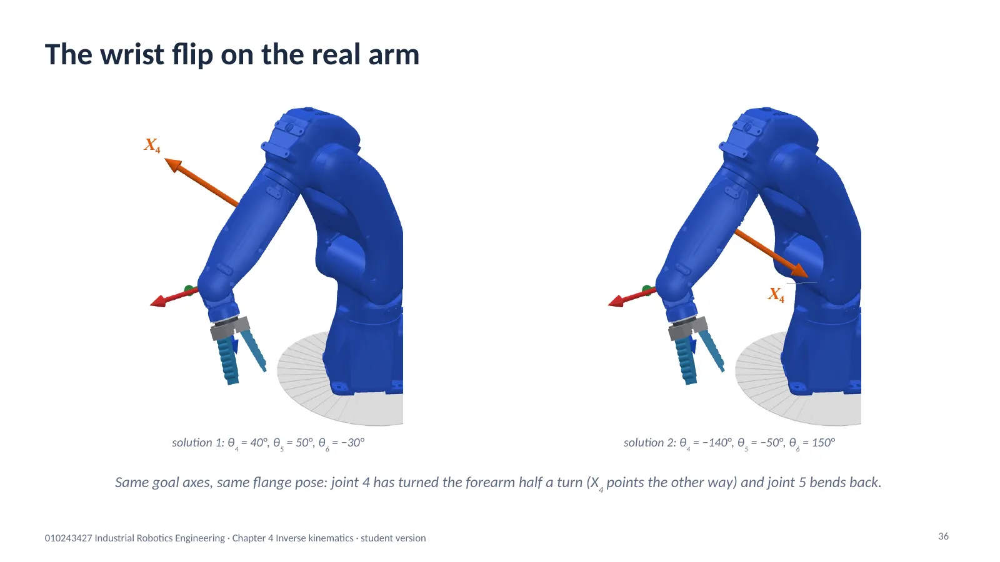
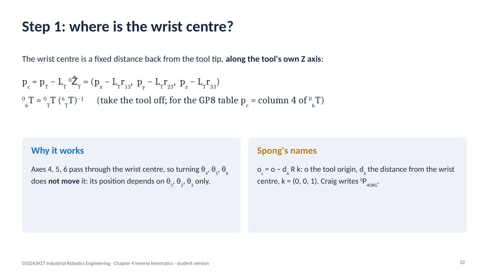
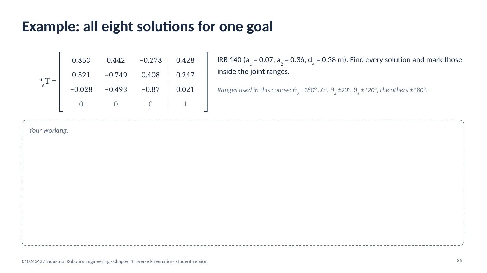
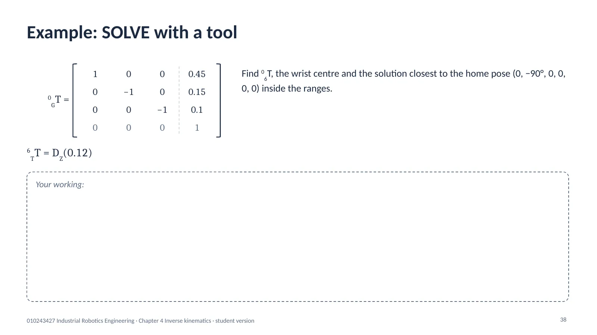

แขนอุตสาหกรรมเกือบทุกตัวมีข้อมือทรงกลม: แกน 4, 5, 6 ตัดกันที่จุดศูนย์กลางข้อมือ ปัญหา 6 ตัวแปรจึงแยกเป็นสองปัญหา 3 ตัวแปร (Pieper, Craig 4.6): θ₁–θ₃ วางจุดศูนย์กลางข้อมือ แล้ว θ₄–θ₆ หมุนเครื่องมือ หน้านี้ทำครบทั้งสองขั้นกับ Yaskawa GP8 ของบทที่ 3 ได้ 8 คำตอบ เลือกตามช่วงข้อต่อ และจบด้วย SOLVE: จากเป้าหมายกับเครื่องมือไปถึงมุมข้อต่อ (Craig 4.8–4.9) ครอบคลุมสไลด์หน้า 31–40 มี เครื่องมือ 1 ชิ้น (A) และ 3 โจทย์
Almost every industrial arm has a spherical wrist: axes 4, 5, 6 meet at the wrist centre. The six-unknown problem then splits into two three-unknown ones (Pieper, Craig 4.6): θ₁–θ₃ place the wrist centre, θ₄–θ₆ turn the tool. This page works both steps on chapter 3's Yaskawa GP8, finds 8 solutions, chooses by the joint ranges, and ends with SOLVE: from a goal and a tool to joint angles (Craig 4.8–4.9). It covers slides pp. 31–40, with one tool (A) and 3 problems.

ลูกบอลสีชมพูคือเป้าหมาย (จุดศูนย์กลางข้อมือของ ⁰₆T) ทุกคำตอบพาจุดศูนย์กลางข้อมือไปที่เดียวกันและหันหน้าแปลนเหมือนกัน ตัวเลข x, y, z ข้างลูกบอลจึงไม่เปลี่ยนเมื่อกดคำตอบอื่น คำตอบคู่ 1–2, 3–4, … ต่างกันเพียงข้อมือกลับ ตารางบอกว่าคำตอบไหนอยู่ในช่วงข้อต่อของ GP8 (แถบเลื่อนก็หยุดที่ช่วงเดียวกัน)
The pink ball is the goal (the wrist centre of ⁰₆T). Every solution takes the wrist centre to the same place with the flange turned the same way, so the x, y, z beside the ball do not change when you press another solution. Pairs 1–2, 3–4, … differ only by the flipped wrist. The table says which solutions lie inside the GP8's joint ranges (the sliders stop at the same ranges).


